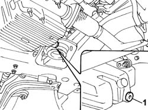
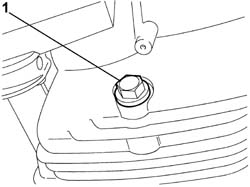

1020A30 ENGINE OIL DRAIN PLUG - Replace
- Path
- Procedures > 10 ENGINE > 1020 CRANKCASE SUMP AND COVERS > 1020A CRANKCASE OIL SUMP > 1020A30 ENGINE OIL DRAIN PLUG - Replace
- Kind
- repair procedure (removal / refitting; the operation number is the code)
- Applies to
- engines: 2.0 TB, 2.4 20V, 3.0 V6, 3.2 V6; all production periods
- Interactive page
- https://sloeber94.github.io/elrnDB-lThss/en/#/74720
Applies to: engines: 2.0 TB, 2.4 20V; all production periods
 Removing
Removing
 Refitting
Refitting- Position the vehicle on a lift.
See in Op. 7055B54 PROTECTION/GUARD under engine - R.R.
1. Undo the engine oil drain plug and drain the oil.

Applies to: engines: 2.0 TB, 2.4 20V; all production periods
Refitting
Removing- Fit a new engine oil drain plug complete with seal and tighten it to the recommended torque.
 | Value - daNm | Fastening | Component | Ø |
|---|---|---|---|---|
. | 2 | Plug | ENGINE OIL DRAIN PLUG | M18 X 1.5 |
See in Op. 0010T11 ENGINE OIL - Check level and top up if necessary
- [0010T11]
See in Op. 7055B54 PROTECTION/GUARD under engine - R.R.
- Remove the vehicle from the lift.
Applies to: engines: 3.0 V6, 3.2 V6; all production periods
Removing
Refitting- Position the vehicle on a lift.
See in Op. 7055B54 PROTECTION/GUARD under engine - R.R.
1. Undo the engine oil drain plug and drain the oil.

Applies to: engines: 3.0 V6, 3.2 V6; all production periods
Refitting
Removing- Fit a new engine oil drain plug complete with seal and tighten it to the recommended torque.
| Value - daNm | Fastening | Component | Ø |
|---|---|---|---|---|
. | (Crankcase sump side) 5 | Plug | ENGINE OIL DRAIN PLUG | M22 X 1.5 |
See in Op. 7055B54 PROTECTION/GUARD under engine - R.R.
See in Op. 0010T11 ENGINE OIL - Check level and top up if necessary
- [0010T11]
- Remove the vehicle from the lift.